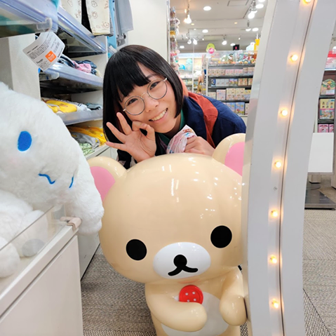

Born in Tokyo, Raised here in Sunnyvale, CA.
3rd Year student at SJSU majoring in Digital Media Art.

Hi! I’m Miyu Kaneko, a Digital Media Arts student from SJSU! I was born in Tokyo, Japan and moved here to Sunnyvale, California when I was three months old. My identity lies in my bi-culutrality; although I have lived most of my life here in the US, I’ve been raised as a Japanese child (thanks mom and dad!) and I feel like a big part of me still belongs there. I am fluent in Japanese listening, speaking, and writing, and I try my best to keep up with their rapidly changing culture and trends! My art reflects my biculturality a lot, I love meshing the flamboyant american pop-art styles with cutesy japanese styles.
When I first started kindergarten, I was terrified at the foreign language and culture, since my parents taught me japanese first. I became infamous along my classmates and their parents as that “one kid who never stopped crying”, even after the first few weeks of class. My class was singing nursery songs - I loved the song and I wanted to chime in but I didn’t know the lyrics. Peers would approach me, ask me friendly questions - but all I could do was slightly nod, I had no idea what they were saying. What helped me find comfort in this horrible, terrifying environment that was the kindergarten class, was recognizing a yellow electric rat character on a card that all my classmates were trading. This card seemed to be the popular currency among the class...and I knew all about it! From there I learnt how to make friends, bond over hobbies even with a language barrier, I started finding peers that shared the same interests: Pokemon, Hello Kitty, Mario...I believe this is when my love for art sparked. As I made friends and learnt English, I eventually stopped crying every morning before class; when that day came all the other parents applauded me (I don’t remember but my dad tells me so). These silly little characters that had become global stars helped change my kindergarten life, and still affects me greatly to this day.
When I make new projects I think of those kindergarten days, and how much joy I found in finding that recognizable character. I think about how that event taught me to value my creativity, eventually leading to me to commit to a Digital Media Art major. I also think about how my family pushed my back with all their love and support when I decided to become an art major, and I think about all the happy faces I have seen when I show my peers my works. Although the kindergarten episode is a small piece of my life, that joy and potential in the power of art is what drives me today. I hope to one day create art that will inspire and change other people's lives for the better, the same way these characters helped make my first friends.
So far I have experience in Paint tool SAI, Procreate, Processing, P5.js, HTML, Adobe LightRoom, Illustrator, Photoshop, After Effects, Premiere Pro, and a bit of MAYA, Blender, and 3ds Max. I am looking forward to perfecting these mediums as well as experimenting with new mediums to further challenge my creativity!
はじめまして！サンノゼ州立大学でデジタルメディアアートを専攻しています、金子実優です。東京で生まれ約三ヵ月でアメリカのカリフォルニア州に引っ越した私ですが、アメリカに住みながらも日本人として育ててくれた親のおかげで私のアイデンティティ（自己同一性）はバイカルチュアリズム（二文化併存）を誇りとしています。日本語と英語、そして私の中のアメリカと日本の文化を大事にしながら、自分にしか作れないような作品を作ろうと心がけています。
はじめてのアメリカの学校（保育園）の思い出は悲惨でした。初めて保育園へ預けられた子供は大概泣きますが二週間もたてばすぐ慣れるもの。私は何週間も何ヵ月もたっても泣き止まず、親にたくさん迷惑をかけました。いずれは他の親にも心配され「よく泣く日本人の子」と知れ渡ってしまう程に。クラスと楽しい童謡を歌いたくても歌詞がわからない。クラスメイトが仲良く接してくれても頭を傾げることしか出来ない。そんな心細い日々でしたがある日クラス内で流行り始めていたカードに見かけたことがあるキャラクターを見つけました。黄色い、電気タイプのネズミ、、？ポケモンならいっぱいキャラクターも知ってる、クラスの誰よりも！いきなり流行りの大先端になった私は国語の違いあれど、初めて友達の作り方を学びました。それからどんどん知っているキャラクター、ハローキティやマリオのことでクラスメイトとはしゃいでは、英語もすぐ発達し、やがて朝も泣かなくなりました。父によると、初めて泣かずに保育園に行った日はクラスメイトの親御さん達が拍手をしてくれたそうです。私は残念ながら覚えていませんが。怖い保育園での時間を友達たちと過ごせる楽しい時間に変えてくれたのは紛れもなくあのポケモンカード一枚でした。自分のアートへの愛や創造性を形作ってくれたのもあの一枚。
新しい作品を作るときはあの保育園の思い出を胸に、いつでも好奇心と想像力を忘れず、自分らしい作品を作ろうと試みます。あの時アートに対して感じた愛は落書きから、作品まで、大学で美術を専攻しようと決めた時、そして今でも自分を自分でいさせてくれています。美術に専攻したいと家族に伝えたときに家族は全力で私をサポートしてくれたことも、友達たちに描いた絵を見せた時のみんなの嬉しそうなリアクションや感想も全部思い出して、アートへの愛を日々日々確信しながらこれからもずっと作品を作っていきたいです。あの時一枚のちっぽけなポケモンカードが自分の世界を変えてくれたように、いつか私も誰かの世界を変えられるような作品を作りたいです。